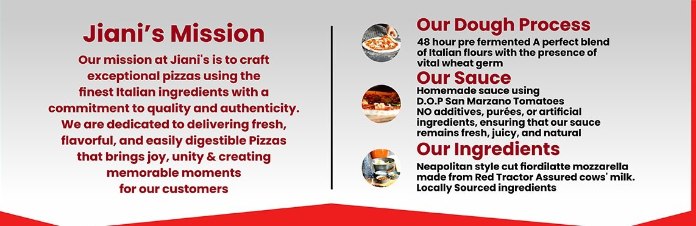

Our story
From Lockdown to Local Favourite
Passion for flavoursome food runs in our family.

Our story
Passion for flavoursome food runs in our family.
Hi, I’m Ronnie B
Along with my wife we serve freshly made, stone-baked Napoli-style pizzas and mouth-watering tiramisu. All my friends and family know how much I love pizza. I mean, who doesn’t?
Ronnie B — The Heart Behind The Heat

The journey
I was roped into making vegetarian pizzas for the family with ready-made dough, which clearly didn’t live up to my standards.
I wanted to learn how to create something genuinely good from scratch. After months of research, testing and mistakes, with inspiration from professional pizzaiolos, the perfect Neapolitan pizza began to take shape.
I created it at home and shared it with a few neighbours. They loved it.
It had to be easily digestible, which is why we make a 48-hour pre-fermented dough from the finest Italian flours.
Small local orders became a pop-up, then a weekly community fixture and a growing events business.


What drives us
To craft exceptional Napoli-inspired pizza using carefully selected ingredients while creating moments that bring people together. Great food has the power to create connection, spark conversation and leave lasting memories.
To grow Jiani’s into a recognised community-focused pizza brand, known not only for exceptional food but for the experiences, relationships and happiness created around it.
Every interaction with Jiani’s should feel warm, genuine and memorable, from the first enquiry to the final pizza served.
Mission & craft

What Jiani’s stands for
The craft. Hand-stretched, thoughtfully fermented and cooked fresh.
Care, passion and attention to detail in the dough, the service and the people.
Food that brings neighbours, families, colleagues and communities together.
The feeling we want people to leave with.
My only request: share these pizzas with your family and friends and make your event a truly memorable one.
Final call
If you’re looking for something fresh, interactive and memorable, we’d love to hear about your event.
Delivering Happiness
in every box
PIZZA • LOVE • UNITY • JOY